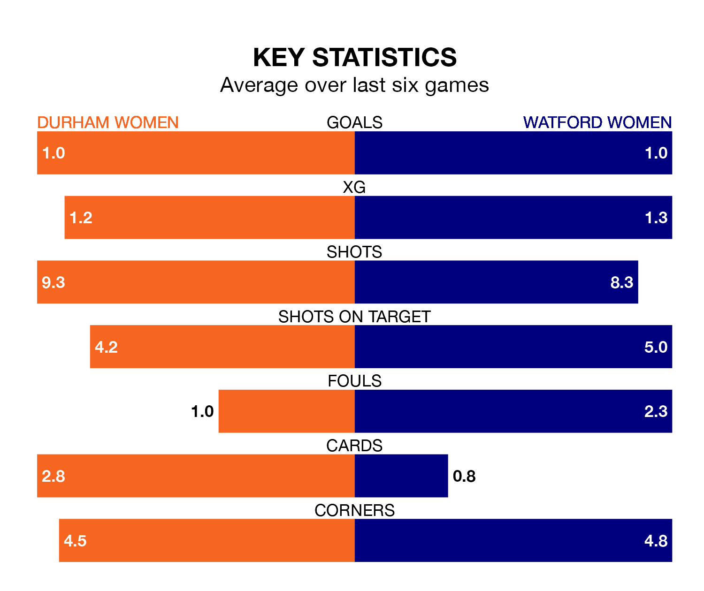

Watford Women travel to Maiden Castle Sports Park looking to secure a first win in 11 FA Women's Championship games against Durham Women on Sunday lunchtime.
Watford have lost eight and drawn two matches since they last earned three points – against Charlton Athletic Women on September 10.
They face a Durham side who have won four and drawn two over that time.
Watford are bottom of the table after 13 games, of which they have won one and drawn three, earning six points.
Durham are six places ahead of the away team in sixth, with five wins and three draws putting them on 18 points.
In the last 10 years, Durham and Watford have played each other on 10 occasions. Durham won seven of them and they drew three times.
On average, Durham scored 2.9 goals and Watford 0.8 in those matches.
Their last meeting was on August 27, when they played out a 1-1 draw.
With 13 goals in 13 games so far this season, the hosts are scoring at below the league average rate with 1.0 goals per game. And they are conceding more than average, letting in 21 goals at a rate of 1.6 per game.
Watford are also below average scorers, with 1.1 goals per game, compared to a league average of 1.4. They have conceded 2.3 goals per game.
In Carly Johns, Watford have one of the league's most on-form strikers so far this season. She has notched five goals in 13 appearances, to sit sixth in the scoring charts.
Durham's top scorers, with three goals each, are Eleanor Doyle and Amy Andrews.
Durham's last match was on January 21, a 1-1 draw against Lewes Women, with Ellie Hack getting the goal for Durham.
Watford lost 3-0 against Southampton Women last time out, also on Sunday.
Updated: 08:51 (UTC), 25/01/24